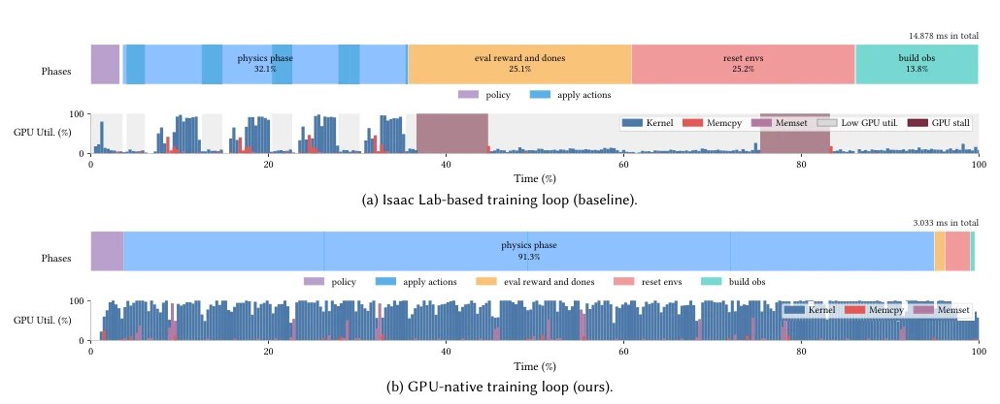
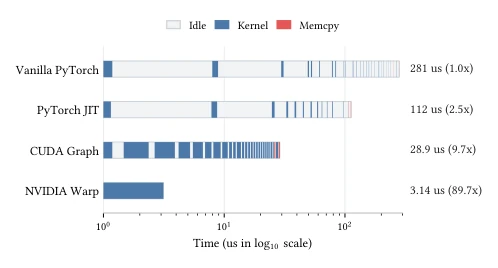
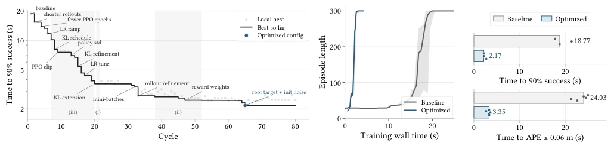
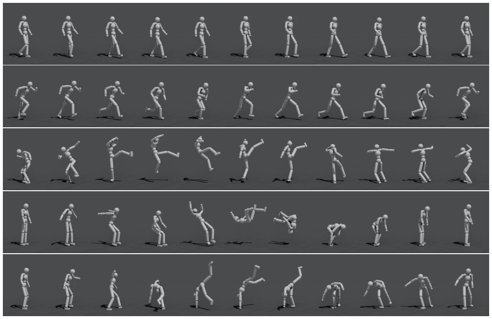
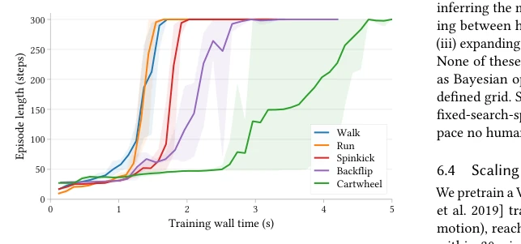

This paper is essentially a "system optimization" task, pushing the DeepMimic approach to the limit. Previously learning a backflip took minutes, now it only takes seconds, with GPU utilization rising from 20% to 90%. However, this tech stack relies on NVIDIA Warp; switching hardware might require starting from scratch. LLM hyperparameter tuning is indeed satisfying, but essentially it still relies on stacking compute to exchange for time; the algorithm itself has not changed. It proves that in the RL field, system bottlenecks are often more fatal than algorithms. However, this "second-level training" has extremely high hardware requirements; ordinary labs might not afford it, and it mainly focuses on rigid body simulation; soft body or complex contact scenarios remain unverified.
研究动机Motivation
物理仿真角色控制一直是图形学和机器人学的硬骨头。DeepMimic [Peng et al. 2018] 开启了模仿学习先河，但训练效率低。Isaac Lab [Mittal et al. 2025] 虽用了GPU，但Profile显示GPU大部分时间在等CPU。Kernel fragmentation和CPU-GPU sync是瓶颈，导致硬件浪费。现有框架如Isaac Gym [Makoviychuk et al. 2021] 和 Brax [Freeman et al. 2021] 虽加速了仿真，但训练循环的Python开销依然巨大，导致端到端效率低下。特别是Python层面的抽象隐藏了内存拷贝和同步成本，使得GPU经常处于空闲状态。
Physics simulation character control has always been a tough nut to crack in computer graphics and robotics. DeepMimic [Peng et al. 2018] pioneered imitation learning, but training efficiency was low. Although Isaac Lab [Mittal et al. 2025] uses GPUs, profiling shows the GPU spends most time waiting for the CPU. Kernel fragmentation and CPU-GPU sync are bottlenecks, leading to hardware waste. Existing frameworks like Isaac Gym [Makoviychuk et al. 2021] and Brax [Freeman et al. 2021] accelerate simulation, but the Python overhead in the training loop remains huge, leading to low end-to-end efficiency. Especially, abstractions at the Python level hide memory copy and synchronization costs, causing the GPU to often remain idle.

Fig. 2. GPU profiling timeline of a single rollout step in two PPO training loops.
The core is building a fully GPU-native training loop. Based on the MuJoCo Warp backend, data does not pass through the CPU. Reward calculation uses Warp kernels to replace PyTorch ops, reducing launch overhead. Reset logic changes from conditional branches to unconditional execution + mask, avoiding sync. PPO updates are also made as GPU-native as possible. Specifically includes: 1. Kernel Fusion: merging multiple small kernels to reduce CPU scheduling. 2. CUDA Graphs: capturing execution streams to eliminate repeated launches. 3. Zero-Copy: states always reside on GPU, avoiding Memcpy. This makes the entire training loop execute continuously on the GPU, eliminating CPU-GPU synchronization points. Through Warp JIT compilation, post-processing stages like reward calculation are also turned into a single kernel, thoroughly solving the fragmentation problem.

Fig. 5. Reward computation benchmark illustrating the techniques for re- ducing kernel fragmentation.
Tested on 5 actions including Backflip. Throughput reaches 0.613 Mfps, 5.85 times faster than Isaac Lab. Training time shrinks from 18 seconds to 2 seconds. LLM Agent automatic tuning succeeded. AMASS large-scale pre-training takes 30 minutes. Specific results: Walk 1.5s, Backflip 2.6s. LLM optimization reduces Backflip training time from 18.77s to 2.17s. Proves that system optimization can release the potential of automated search. On the AMASS dataset, VAE pre-training takes only 30 minutes, downstream tasks converge in 1 minute.

Fig. 7. LLM agent hyperparameter optimization on the backflip motion tracking task. The objective is the train time required to reach a success rate over 0.9.

Fig. 8. Qualitative motion-tracking results of five motions. From top to bottom: walk, run, spinkick, backflip, and cartwheel.

Fig. 9. Learning curves for the five reference motions.